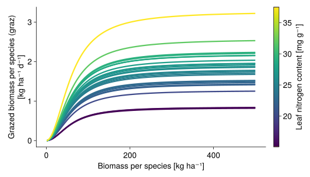
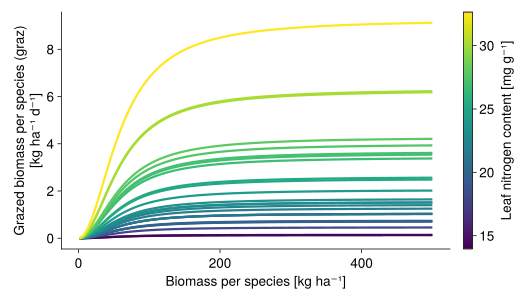
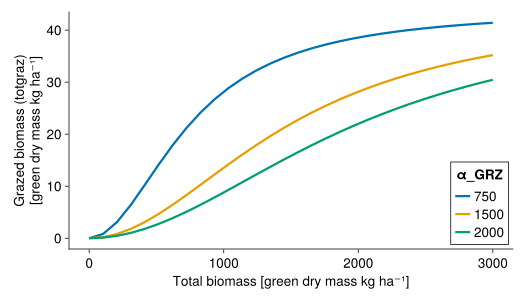
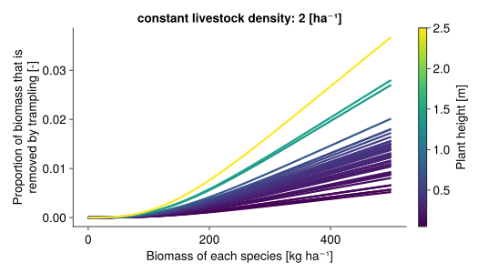
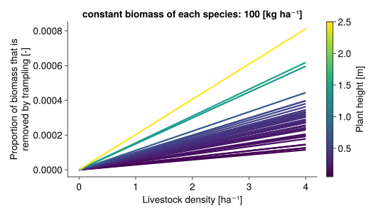
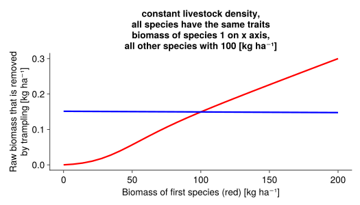

Mowing, grazing, and trampling
Biomass is removed by...
Mowing
GrasslandTraitSim.mowing! — Functionmowing!(
;
t,
container,
mowing_height,
biomass,
mowing_all,
x,
y
)
Influence of mowing for plant species with different heights ($height$):
Grazing and trampling
GrasslandTraitSim.grazing! — Functiongrazing!(; t, x, y, container, LD, biomass)
\[\begin{align} \rho &= \left(\frac{LNCM}{LNCM_{cwm]}}\right) ^ {\text{β_ρ_lnc}} \\ μₘₐₓ &= κ \cdot \text{LD} \\ h &= \frac{1}{μₘₐₓ} \\ a &= \frac{1}{\text{α_GRZ}^2 \cdot h} \\ \text{totgraz} &= \frac{a \cdot (\sum \text{biomass})^2} {1 + a\cdot h\cdot (\sum \text{biomass})^2} \\ \text{share} &= \frac{ \rho \cdot \text{biomass}} {\sum \left[ \rho \cdot \text{biomass} \right]} \\ \text{graz} &= \text{share} \cdot \text{totgraz} \end{align}\]
LDdaily livestock density [livestock units ha⁻¹]κdaily consumption of one livestock unit [kg], follows [10]ρpalatability, dependent on nitrogen per leaf mass (LNCM) [-]α_GRZis the half-saturation constant [kg ha⁻¹]- equation partly based on [11]
Influence of grazing (livestock density = 2), all plant species have an equal amount of biomass (total biomass / 3) and a leaf nitrogen content of 15, 30 and 40 mg/g:
β_ρ_lnc= 1.5

β_ρ_lnc= 5

Influence of α_GRZ: 
GrasslandTraitSim.trampling! — Functiontrampling!(; container, LD, biomass)
\[\begin{align} \text{trampled_proportion} &= \text{height} \cdot \text{LD} \cdot \text{β_TRM} \\ \text{trampled_biomass} &= \min(\text{biomass} ⋅ \text{trampled_proportion}, \text{biomass}) \\ \end{align}\]
It is assumed that tall plants (trait: height) are stronger affected by trampling. A linear function is used to model the influence of trampling.
Maximal the whole biomass of a plant species is removed by trampling.
biomass[$\frac{kg}{ha}$]LDdaily livestock density [$\frac{\text{livestock units}}{ha}$]β_TRM[ha m⁻¹]- height canopy height [$m$]
  